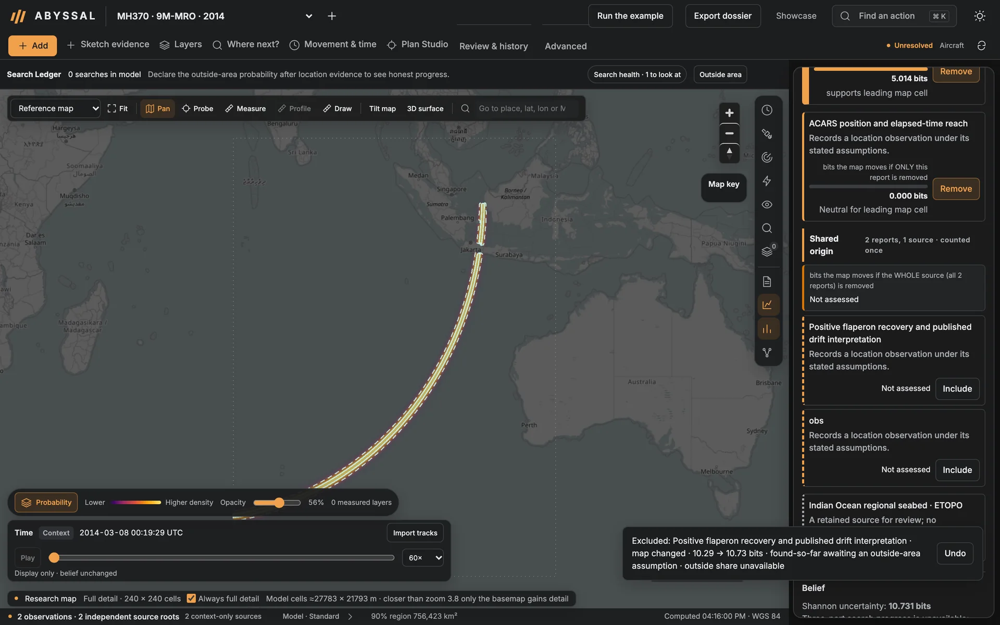

Case StudyRaw public data · Nov 2026
Rebuilding the MH370 search from raw physical measurements.Independent Bayesian evidence fusion inside ABYSSAL: validated Classic Aero BTO/BFO physics, ERA5 winds, 5,040-cell timing-only flight scans, pixel-measured sonar coverage, 36 years of NOAA drifters, raw IMOS hydrophones, and null tests of WSPR, seismometers, MODIS, and Jason-2.
- Coverage
- 120,522 km² measured from Geoscience Australia mosaic pixels (~60 m); 99.67% core imaged (0.013% mass in gaps).
- Result
- Under steady flight (supported independently by BTO and BFO), 39.45°S–40.5°S holds 36% of the posterior (~29% after second-round nulls); 37.5°S–38.6°S AUV re-look leads if fuel trims Mach 0.84–0.85 tracks.
